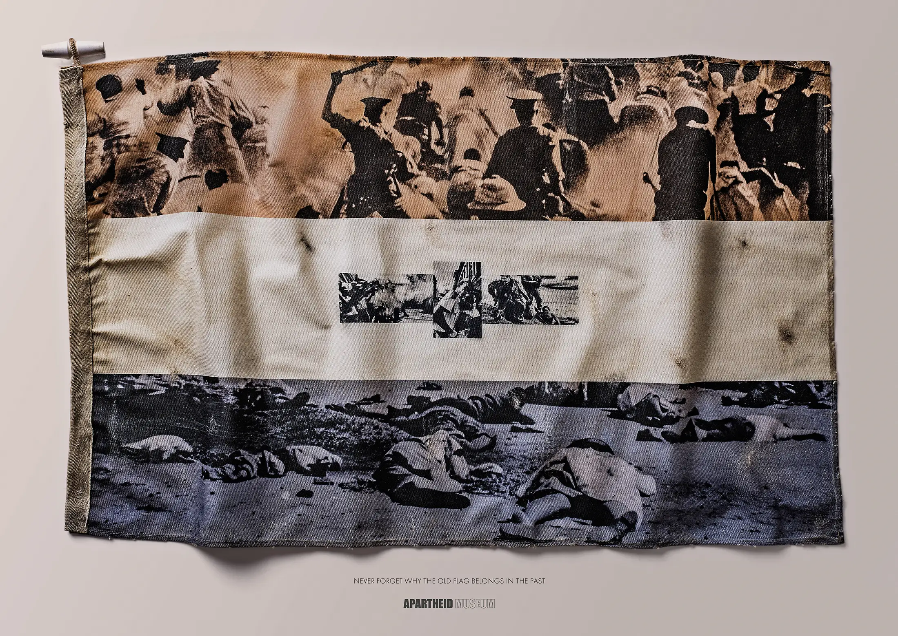
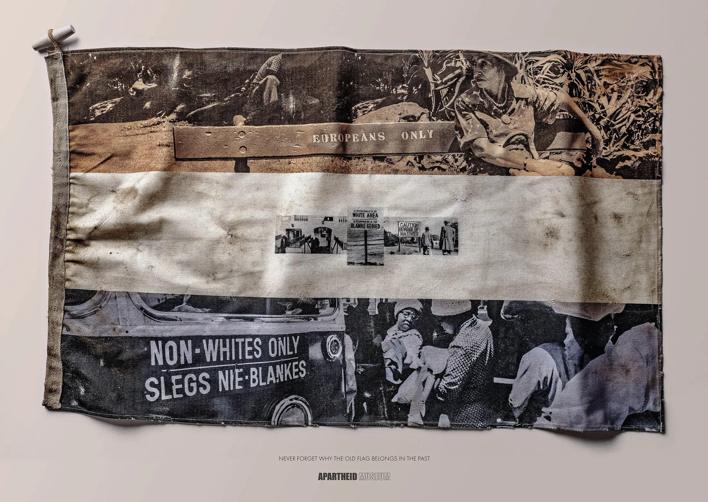
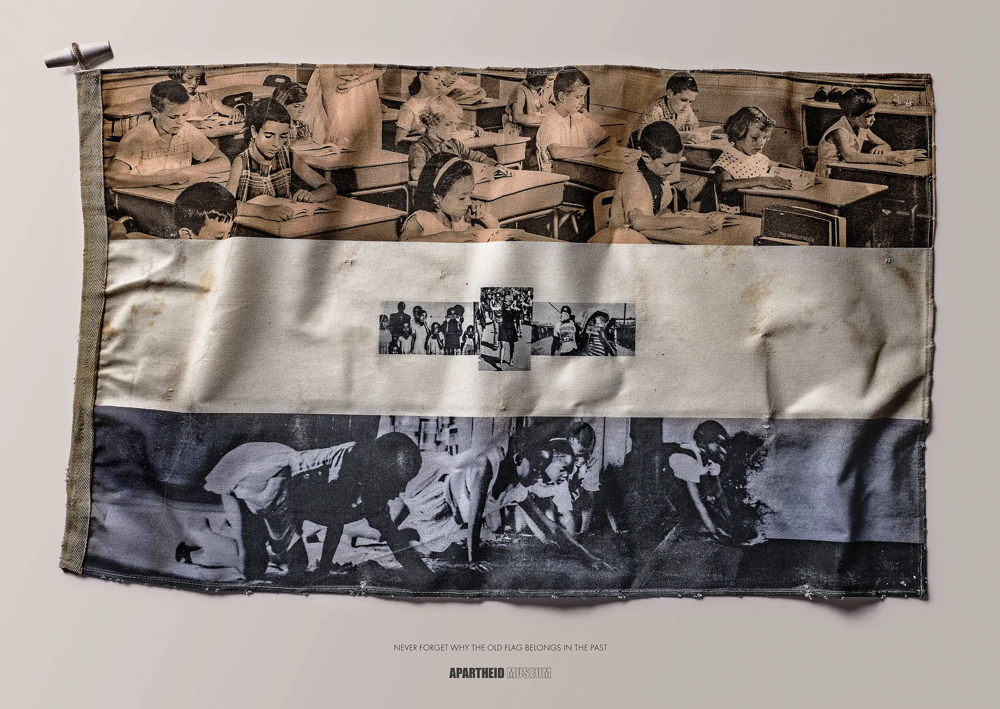

tshumaosmond@gmail.com
@wakwatshuma
Providence, Rhode Island. United States of America
Brief
In a highly political environment, the role of the old South African flag needs to be clarified. The flag represents the unfortunate criminal behaviour against the non-white majority ethnic group.
Execution
By super-imposing original iconic Apartheid-era visuals over the old flag, we were able to recreate an impression of what it has actually come to represent.
Outcome
The tactical campaign, after clearly striking a chord with the general public, resulted in the idea being manifested into an actual physical permanent installation in the museum; the only place this flag truly belongs.